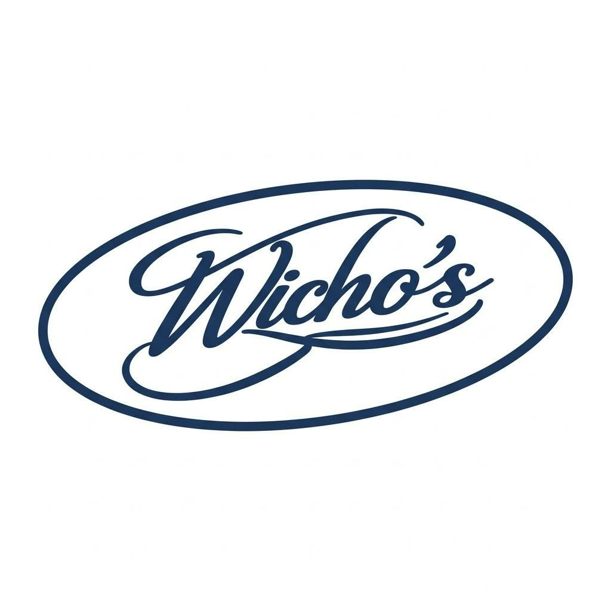
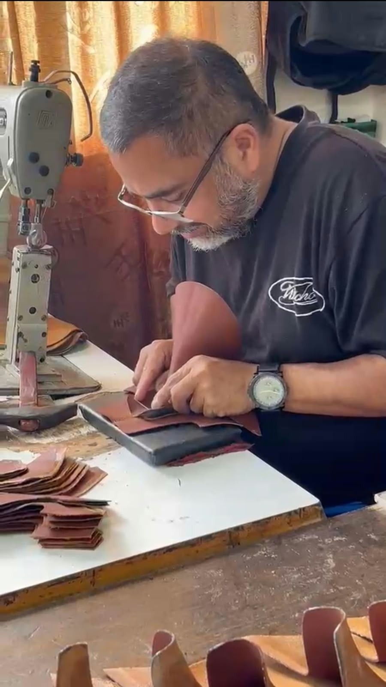
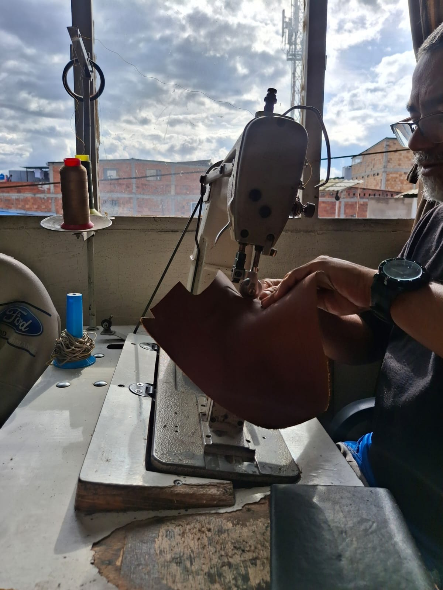
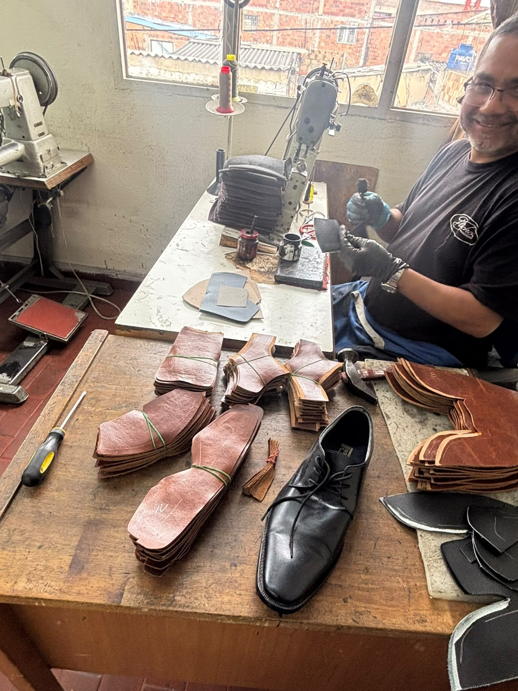
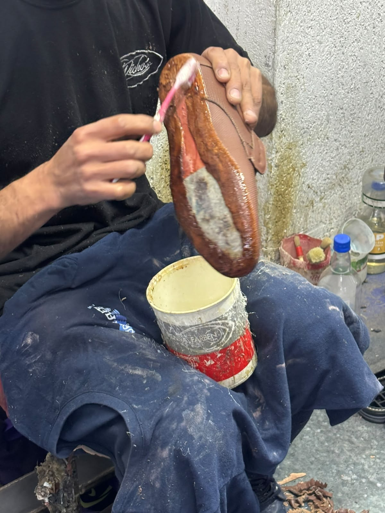

Los primeros pasos
Un taller en casa y una producción inicial cercana a 60 pares semanales.

WICHO'SSPORT · CALZADOHECHO EN COLOMBIA
Calzado creado con experiencia, dedicación y atención a cada detalle. Una historia que se construye par a par.
NO ES SOLO UN PAR DE ZAPATOS.
DE UN PEQUEÑO TALLER A UNA HISTORIA DE CRECIMIENTO
Calzado Wichos nació en medio de una dificultad económica. Nelson decidió comenzar de nuevo, independizarse y construir su propio camino en la fabricación de calzado.
Descubre cómo trabajamos ↘Los primeros pasos se dieron en casa, con una máquina, una pulidora y el apoyo de un guarnecedor y un solador. Nelson asumía distintas tareas: cortaba, emplantillaba, hacía domicilios y llevaba la administración del negocio.
La producción comenzó alrededor de 60 pares semanales. Seis meses después llegó a 180 pares y, al cumplir el primer año, el equipo ya reunía personas dedicadas a diferentes labores de fabricación.
Con esfuerzo, el negocio logró comprar la vivienda donde había comenzado. Más adelante llegó el traslado a una bodega, donde la producción alcanzó cerca de 300 pares semanales. La incorporación de una máquina montadora y la conformación de un equipo con personal especializado permitieron que, en una etapa posterior, se llegara aproximadamente a 600 pares por semana.
“Crecer también significa no olvidar dónde comenzó todo.”
La historia de Wicho's Sport
Un taller en casa y una producción inicial cercana a 60 pares semanales.
A los seis meses, la producción llegó aproximadamente a 180 pares por semana.
El traslado a una bodega y la incorporación de maquinaria fortalecieron la fabricación.
Una trayectoria construida con trabajo, aprendizaje y compromiso.
Las cifras corresponden a momentos históricos relatados por la empresa; no representan la capacidad productiva actual.
MODELOS DESTACADOS
Explora algunos de los estilos que hacen parte de nuestra selección. Para conocer materiales, tallas y disponibilidad, conversemos directamente.
Fotografías de referencia de modelos compartidos por la empresa. Los materiales, referencias, tallas y disponibilidad deben confirmarse al momento de la consulta.
DE LAS MANOS AL PRODUCTO FINAL
La fabricación reúne distintas labores, conocimiento técnico y cuidado en los detalles. Estas imágenes nos acercan al trabajo que ocurre dentro del taller.




Las etapas y su orden pueden variar según el tipo de producto y su método de fabricación.
NUESTRA FORMA DE TRABAJAR
Trabajamos con atención en los procesos y en los detalles de cada producto.
El conocimiento de la fabricación es parte de nuestra historia y nuestro trabajo.
Creemos en relaciones comerciales construidas con comunicación y responsabilidad.
Calzado Sport Wicho’s es una empresa dedicada a la fabricación y comercialización de calzado deportivo y casual, ofreciendo productos de calidad, cómodos y con diseños atractivos buscando satisfacer las necesidades de nuestros clientes mediante un servicio responsable, cercano y oportuno. Trabajamos con compromiso, responsabilidad y mejora continua para generar valor a nuestros clientes, colaboradores y a la empresa.
Para el año 2030, Calzado Sport Wichos busca consolidarse como una empresa reconocida en Bogotá y a nivel nacional por la calidad, comodidad y variedad de sus productos, fortaleciendo sus canales de comercialización, innovando en sus diseños y procesos, y construyendo relaciones duraderas con sus clientes y proveedores.
¿BUSCAS UN FABRICANTE O QUIERES CONOCER NUESTROS MODELOS?
Estamos listos para atender tus consultas y orientarte sobre nuestros productos.
Escríbenos por WhatsApp ↗